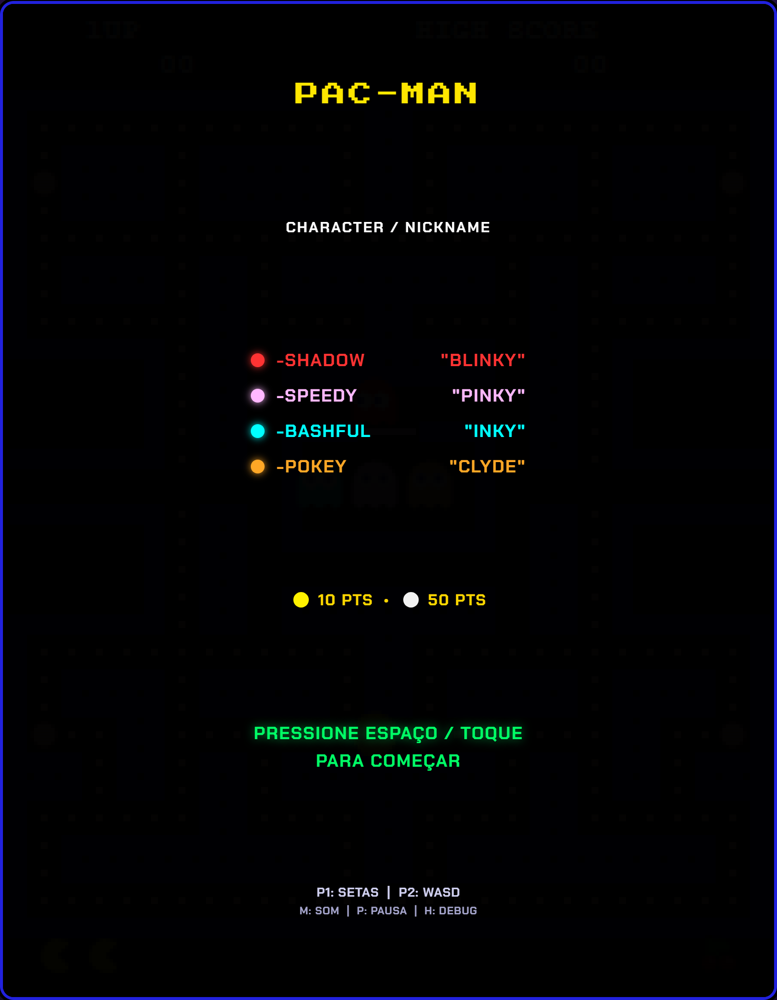
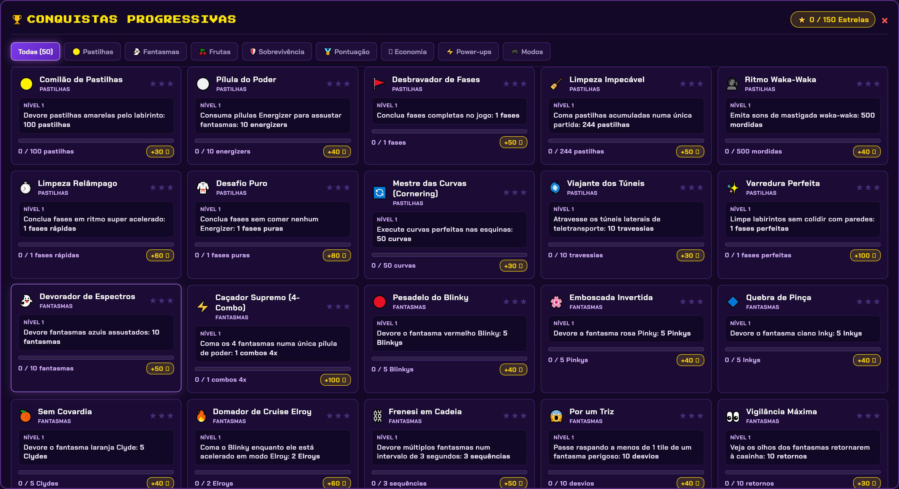
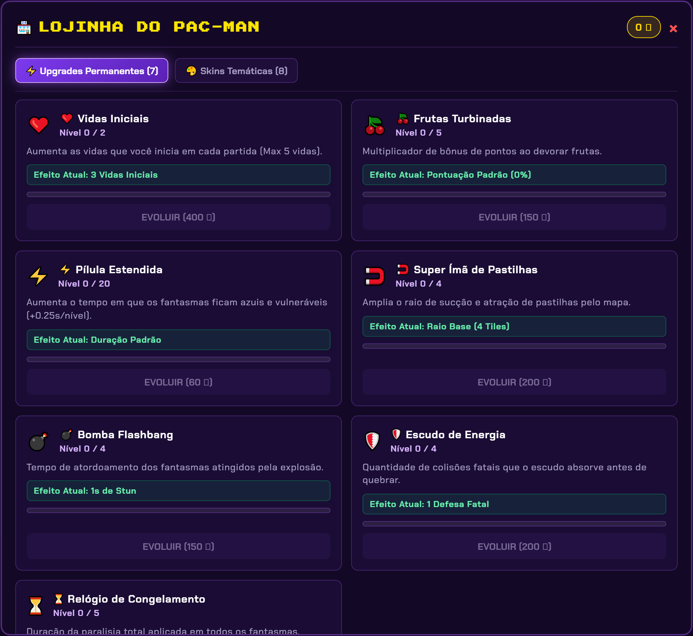
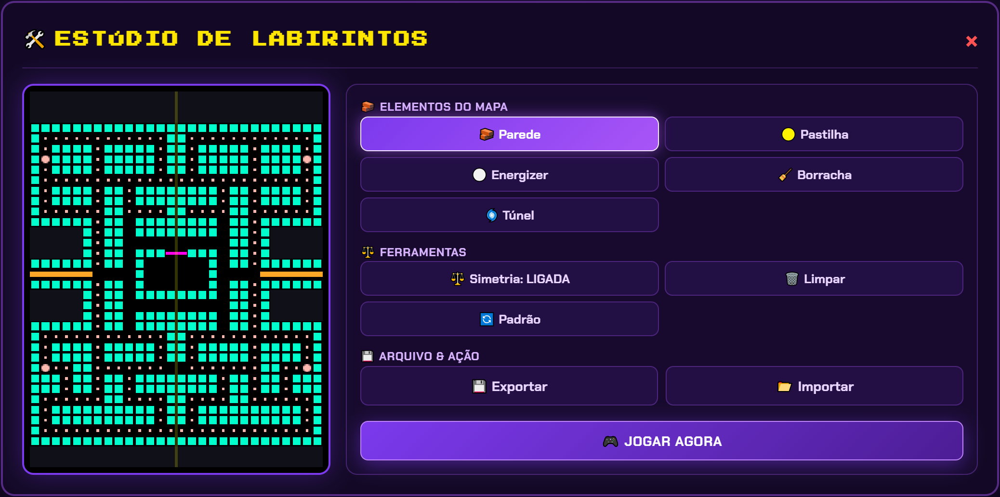

A LENDA DOS ARCADES,
TOTALMENTE REINVENTADA.
O clássico imortal dos anos 80 recriado com IA autêntica dos 4 fantasmas, 150 conquistas progressivas, modos 2P Co-op e Versus, loja com upgrades e skins e um estúdio de labirintos integrado.

O QUE TORNA ESTA VERSÃO ÚNICA
Combinamos a matemática original do arcade de 1980 com sistemas modernos de progressão, economia e personalização.
IA Autêntica dos 4 Fantasmas
Cada fantasma possui a sua personalidade exata: Blinky mira direto no Pac-Man, Pinky faz emboscada 4 tiles à frente, Inky calcula vetor de pinça dupla e Clyde se afasta em raio de 8 tiles.
150 Conquistas Progressivas
50 trilhas de missões organizadas em Bronze (⭐), Prata (⭐⭐) e Ouro (⭐⭐⭐). Ganhe moedas para desbloquear skins e power-ups conforme você joga.
Loja de Upgrades & 8 Skins
Compre melhorias cumulativas (Vidas extras, Duração do Energizer, Multiplicador de Frutas, Super Ímã, Escudo e Bombas) e equipe 8 visuais pixel-art personalizados.
Estúdio de Labirintos em Tempo Real
Crie seus próprios mapas com ferramenta de simetria bilateral automática, posicione pastilhas, energizers e túneis. Exporte ou importe em JSON e jogue instantaneamente!
Power-ups Dinâmicos no Labirinto
Colete itens especiais durante as partidas: Bombas de Stun em área, Super Ímã que atrai pastilhas, Escudo de Energia contra colisões e Ampulheta de Gelo para congelar os fantasmas.
Ranking Arcade com 3 Iniciais
Bata o seu recorde e registre suas 3 iniciais (AAA, PRO, LEO) no hall da fama arcade. Histórico persistente e imune a apagamentos acidentais.
5 FORMAS INÉDITAS DE JOGAR
Escolha seu modo preferido e experimente dinâmicas de jogo que vão muito além do fliperama original.
Clássico 1P
A experiência original de 1980 com física de curvas de canto, velocidade exata, fases de frutas e comportamento clássico de dispersão/perseguição.
Ghost Hunter
Você é o caçador! Os fantasmas começam vulneráveis e tentam fugir desesperadamente enquanto você limpa o labirinto em alta velocidade.
2P Co-op (Pac & Ms. Pac)
Jogue em dupla no mesmo teclado! P1 controla o Pac-Man (Setas) e P2 controla a Ms. Pac-Man (WASD) dividindo vidas e estratégias.
2P Versus (Pac vs Blinky)
Um jogador assume o Pac-Man e o outro assume o controle manual do fantasma Blinky com velocidade agressiva. Quem sobreviverá?
Modo Turbo (2x)
Velocidade dobrada para Pac-Man e fantasmas. Para quem busca um teste de reflexos puro e adrenalina máxima no arcade.
CONHEÇA AS TELAS DO JOGO
Interface moderna construída em Roxo Glassmorphism, com tipografia nítida e efeitos neon vibrantes.
Gabinete Arcade em Alta Definição
A tela inicial conta com overlay vetorial subpixel que elimina qualquer borrão ou serrilhado. Você pode alternar filtros CRT scanlines, pausar a qualquer momento e mutar sons individuais (como a sirene de fundo).
- ✨ Letras 100% nítidas com anti-aliasing cristalino
- 🚨 Controle de som independente (silencie a sirene sem tirar os efeitos)
- 🧠 Modo Debug em tempo real [H] com alvos dos fantasmas na tela

50 Trilhas com 150 Níveis de Conquista
Cada missão possui 3 níveis (Bronze ⭐, Prata ⭐⭐ e Ouro ⭐⭐⭐). Ao completar um nível, você ganha moedas de ouro para gastar na loja e uma notificação brilhante aparece na tela.
- ⭐ Filtros rápidos: Todas, Em Progresso, Concluídas e Mestres
- 🪙 Recompensas progressivas em moedas de ouro
- 🔥 Notificações sonoras ao desbloquear novos títulos

Loja com 7 Trilhas de Upgrades & 8 Skins
Personalize seu estilo de jogo. Melhore a duração do energizer, multiplique o valor das frutas, aumente o alcance do ímã ou equipe skins lendárias como a Skin Dourada ou Óculos Escuros.
- 🕶️ 8 Skins pixel-art com animações autênticas
- ⚡ 7 Upgrades cumulativos para facilitar fases difíceis
- 💾 Save permanente no disco local

Estúdio de Criação de Fases
Desenhe seus próprios labirintos em uma tela espaçosa de 54% com ferramentas de simetria bilateral automática. Exporte o arquivo em JSON para compartilhar com amigos ou carregue mapas criados por outros jogadores.
- ⚖️ Simetria bilateral automática (desenha os dois lados juntos)
- 🌀 Ferramenta de Túneis de Teletransporte
- 🎮 Botão "JOGAR AGORA" para testar sua fase imediatamente
CLÁSSICO 1980 VS. REMASTER 2026
Veja as diferenças entre o jogo arcade original e a edição aprimorada Next Automatik.
| RECURSO | ARCADE 1980 ORIGINAL | PAC-MAN NEXT AUTOMATIK |
|---|---|---|
| IA Autêntica dos 4 Fantasmas | ✅ Sim | ✅ Sim (100% fiel à matemática de 1980) |
| Sistema de Conquistas | ❌ Não | 🏆 150 Conquistas em 3 Tiers (Bronze/Prata/Ouro) |
| Loja de Upgrades & Moedas | ❌ Não | 🏪 7 Trilhas de Upgrades Cumulativos |
| Skins Personalizadas | ❌ Não | 🕶️ 8 Skins Pixel-Art Desbloqueáveis |
| Modos Multiplayer (Co-op & Versus) | ❌ Alternado (Turnos) | 👥 Co-op Simultâneo e Versus (Pac vs Fantasma) |
| Estúdio Criador de Labirintos | ❌ Mapas Fixos | 🛠️ Criador de Fases com Export/Import JSON |
| Filtros Visuais & Áudio Independente | ❌ Não | 🔊 Controle de Sirene & Filtro CRT Scanlines |
| Preço / Licença | Fichas / Arcade | 🎁 100% Gratuito & Livre de Anúncios |
PERGUNTAS FREQUENTES
Sim, totalmente gratuito! Não há anúncios, microtransações com dinheiro real nem assinaturas. Todas as moedas do jogo são obtidas jogando, quebrando recordes e desbloqueando as 150 conquistas.
Na versão para computador (.exe), o jogo salva automaticamente na pasta do sistema do Windows
(%APPDATA%/PacManArcade/savedata.json). Na versão web, ele salva no armazenamento local do navegador.
Ambos são permanentes e mantêm suas moedas, skins e conquistas salvas para sempre.
Quando uma nova versão ou novos labirintos forem lançados no repositório do GitHub, o jogo avisa automaticamente ao abrir para você atualizar em 1 clique, sem perder nenhum dos seus dados ou moedas acumuladas!
Sim! Através da versão web no navegador, o jogo roda perfeitamente no Mac, Linux, smartphones e tablets com controles por toque na tela.
Dentro do jogo, abra o Estúdio de Labirintos. Desenhe seu mapa e clique em Exportar JSON.
Ele gerará um arquivo com o código do seu mapa. Seu amigo só precisa clicar em Importar JSON e carregar o arquivo para jogar sua fase!